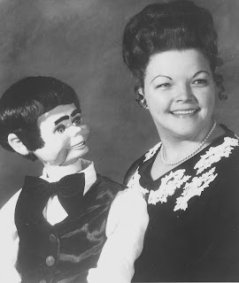
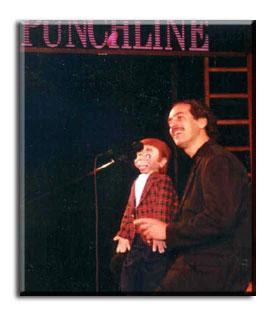

Nancy Kelly
8/24/2010
{kind=link}

by Bob Abdou
In 1995 I saw an ad in the Penny Pincher magazine for a
"Maher Studios" dummy and magazines for sale.
Unless you are a vent, you probably won't recognize the name "Maher Studios" when it comes to selling a dummy, so I called the seller (Nancy White Kelly, file photo left) and she was very nice. She was retiring and wanted to sell everything she had left: the dummy, an Axtell bird and many old magazines and photos.
I purchased them and never heard from her again but she left me with some g
So since this figure was new to me, I used him for my writing comedy course in Atlanta.
In 1995 I saw an ad in the Penny Pincher magazine for a
"Maher Studios" dummy and magazines for sale.
Unless you are a vent, you probably won't recognize the name "Maher Studios" when it comes to selling a dummy, so I called the seller (Nancy White Kelly, file photo left) and she was very nice. She was retiring and wanted to sell everything she had left: the dummy, an Axtell bird and many old magazines and photos.
I purchased them and never heard from her again but she left me with some g
{kind=link}

reat memorabilia.So since this figure was new to me, I used him for my writing comedy course in Atlanta.
As a footnote, the photo (right) shows me on stage for the very first time. The year was 1995, and the performance was at The Punchline comedy club in Atlanta. I still have it on tape. It was graduation night for our comedy writing group. The figure I'm using is Chip (now called Teddy), another figure I got from Nancy Kelly. Inside his trunk were a couple of dummies and puppets, old Oracles and photos I treasure to this day.